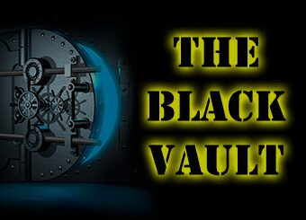

Qual o propósito desse site?
O objetivo desse site é fornecer acesso e exposição às páginas confidenciais do Projeto Gateway traduzidas em (PT-BR), que foram desclassificadas pela CIA em 1995, foi nesse ano que o governo dos Estados Unidos tornou pública a existência do projeto, que estava envolvido em pesquisas relacionadas à visão remota e à percepção extrassensorial. Os documentos foram tornados públicos em resposta à Lei de Liberdade de Informação (FOIA), graças aos esforços de desclassificação e pesquisa liderados por John Greenewald Jr., o criador do The Black Vault.
Clique na imagem acima para acessar o The Black Vault.
The Black Vault é reconhecido como o maior repositório online da FOIA do mundo, e sua pesquisa tem sido fundamental na desclassificação de centenas de milhares de páginas de documentos anteriormente restritos pela CIA e pelo Governo Militar dos Estados Unidos. Portanto seu site serve como um valioso recurso para aqueles que buscam informações sobre questões relacionadas à segurança nacional, governo e militares, proporcionando um acesso aberto a documentos previamente secretos.
Portanto, este site aqui tem como objetivo principal continuar esse importante trabalho de transparência e pesquisa, permitindo que o público falante de português em geral também tenham acesso às informações previamente confidenciais relacionadas ao Projeto Gateway (Projeto Portal) e outros tópicos de interesse público que foram desclassificados graças à FOIA e aos esforços de pesquisa do The Black Vault.
Clique aqui para acessar os documentos traduzidos